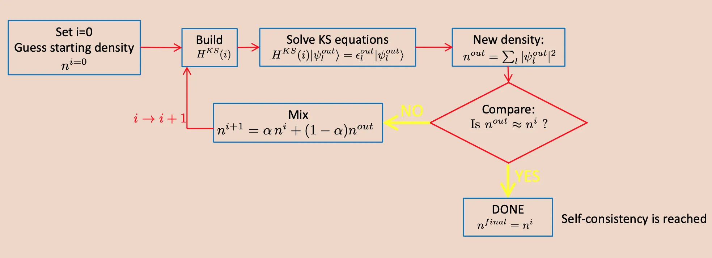

Visão geral da DFT
Density functional theory (DFT) approaches the many-body problem by focusing on the electronic density which is a function of three spatial coordinates instead of finding the wave functions. DFT tries to minimize the energy of a system (ground state) in a self consistent way, and it is very successful in calculating the electronic structure of solid state systems.
A functional is a function whose argument is itself a function. \(f(x)\) is a function of the variable \(x\) while \(\mathcal{F}[f]\) is a functional of the function \(f\).
\[y = f(x)\]\(f\) is a function, it takes a number \(x\) as input and output \(y\) is also a number.
\[y = \mathcal{F}[f(x)]\]\(\mathcal{F}\) is a functional it takes function \(f(x)\) as input and output \(y\) is a number.
Hohenberg-Kohn Theorem 1
The ground state density \(n(\textbf{r})\) determines the external potential energy \(v(\textbf{r})\) to within a trivial additive constant.
So what Hohenberg-Kohn theorem says, may not sound very trivial. Schrödinger equation says how we can get the wavefunction from a given potential. Once solved the wavefunction (which could be difficult), we can determine the density or any other properties. Now Hohenberg and Kohn theorem says the opposite is also true. For a given density, the potential can be uniquely determined. For non-degenerate ground states, two different Hamiltonian cannot have the same ground-state electron density. It is possible to define the ground-state energy as a function of electronic density.
Hohenberg-Kohn Theorem 2
Total energy of the system \(E(n)\) is minimal when \(n(\textbf{r})\) is the actual ground-state density, among all possible electron densities.
The ground state energy can therefore be found by minimizing \(E(n)\) instead of solving for the many-electron wavefunction. However, note that HK theorems do not tell us how the energy depends on the electron density. In reality, apart from some special cases, the exact \(E(n)\) is unknown and only approximate functionals are used.
The essence of the HK theorem is that the non-degenerate ground-state wave function is a unique functional of the ground-state density:
\[\Psi_0(\textbf{r}_1, \textbf{r}_2, \dots, \textbf{r}_N) = \Psi[n_0(\textbf{r})]\]Kohn-Sham hypothesis
\[\left[-\frac{\hbar^2 \nabla^2}{2m} + v_s(\textbf{r}) \right] \psi_i(\textbf{r}) = \epsilon_i \psi_i(\textbf{r})\] \[v_s(\textbf{r}) = v_{ext}(\textbf{r}) + e^2 \int d^3r' \frac{n(\textbf{r})}{|\textbf{r} - \textbf{r}'|} + v_{xc}(\textbf{r}; [n])\] \[n(\textbf{r}) = \sum_i f_i |\psi_i (\textbf{r})|^2\]For any system of \(N\) interacting electrons in a given external potential \(v_{ext} (\textbf{r})\), there is a virtual system of \(N\) non-interacting electrons with exactly the same density as the interacting one. The non-interacting electrons subjected to a different external (single particle) potential.
where \(f_i\) is the occupation factor of electrons (\(0 \le f_i \le 2\)). The KS equation looks like single particle Schrödinger equation, however \(e^2 \int d^3r' \frac{n(\textbf{r})}{|\textbf{r} - \textbf{r}'|}\) (the Hartree energy due to electrostatic interaction of electronic cloud) and \(v_{xc} (\textbf{r}; [n])\) (exchange-correlation potential, reminiscence from Hartree-Fock theory, it includes all the remaining/unknown energy corrections) terms depend on \(n(\textbf{r})\) i.e., on \(\psi_i\) which in turn depends on \(v_{ext}\). Therefore the problem is non-linear. It is usually solved computationally by starting from a trial potential and iterate to self-consistency. Also note that we have not included the kinetic energy term for the nucleus. This is because the nuclear mass is about three orders of magnitude heavier than the electronic mass (\(M \gg m\)), so essentially electronic dynamics is much faster than the nuclear dynamics (see Born-Oppenheimer approximation). Now we are left with the task of solving a non-interacting Hamiltonian.
\(v_{ext}(\textbf{r})\) includes the potential energy due to nuclear field, and external electric and magnetic fields if present.
Exchange-correlation functional
Local Density Approximation (LDA)
Energy functional is a function of the local charge density:
\[E_{xc} = \int n(\textbf{r}) \epsilon_{xc}(n(\textbf{r})) d\textbf{r}\] \[v_{xc}(\textbf{r}) = \epsilon_{xc}(n(\textbf{r})) + n(\textbf{r})\frac{d\epsilon_{xc}(n)}{dn}\bigg\rvert_{n=n(\textbf{r})}\]where \(\epsilon_{xc}(n)\) is obtained for the homogeneous electron gas of density \(n\) (using Quantum Monte Carlo techniques) and fitted to some analytic form.
Generalized Gradient Approximation (GGA)
These are a family of functionals that depends on the local density and the local gradient of the density:
\[E_{xc} = \int n(\textbf{r}) \epsilon_{GGA}(n(\textbf{r}), |\nabla n(\textbf{r})|) d\textbf{r}\]There are many flavor of this functional. There are also more advanced functionals: Meta-GGA (e.g., SCAN), hybrids (e.g., B3LYP), nonlocal functionals for van der Waals forces, Grimme's DFT+D (a semi-empirical correction to GGA). They usually produces more accurate result, but computationally more expensive and sometimes numerically unstable.
Algorithmic implementation
We can write our Schrödinger in Dirac Bra-Ket notation:
\[\hat{\mathcal{H}} \ket{\psi} = E\ket{\psi}\]we are going to solve non-interacting single particle Hamiltonian in terms of known basis functions (plane waves) with unknown coefficients. We start with an initial guess for the electron density \(n(\textbf{r})\), and construct a pseudo potential for the nuclear potential. In turn, we have the Hamiltonian. Solve for \(\psi_i(\textbf{r})\), subsequently \(n(\textbf{r})\), and iterate until self consistency is achieved.

Self consistency loop in DFT calculation. The above screenshot was taken from lecture slide of Professor Ralph Gevauer from ICTP MAX School 2021.The potential due to the ions is replaced by the pseudo potentials which removes the oscillations near the atomic core (reducing number of required plane wave basis vectors) and simulates the exact behavior elsewhere. The pseudo potential is also different for different exchange correlation functional, and it is specified in the pseudo potential file. If a system had more than one type of atom, always choose the pseudo potentials with same exchange correlation (e.g., PBE).
It is important to note that DFT is calculations are not exact solution to the real systems because exact functional (\(v_{xc}\)) we need to solve the Kohn-Sham equation is not known. Therefore, we have to compare the results with experimental observations. The Kohn-Sham wavefunction of orbitals is not an approximation to the exact wavefunction. Rather it is precisely defined property of any electronic system, which is uniquely determined by the density. The in-exactness of DFT results come from the fact that we do not know the exact correlation functional that truly describes real systems.
Plane-wave expansion
The wavefunctions are expanded in terms of a basis set. In quantum espresso, the the basis function is plane waves. There exists other DFT codes that use localized basis function as well. Plane waves are simpler but generally requires much large number of them compared to other localized basis sets.
\[\psi_i(\textbf{r}) = \sum_{\alpha = 1} ^{N_b} c_{i\alpha} f_{\alpha}(\textbf{r})\]Where \(N_b\) is the size basis set. Then the eigenvalue equation becomes:
\[\sum_{\beta} \mathcal{H}_{\alpha\beta} c_{i\beta} = \epsilon_i c_{i\alpha}\] \[\Rightarrow \begin{pmatrix} \mathcal{H}_{11} & ... & \mathcal{H}_{1b} \\ ... & ... & ... \\ \mathcal{H}_{b1} & ... & \mathcal{H}_{bb} \end{pmatrix} \begin{pmatrix} c_1 \\ ... \\ c_b \end{pmatrix} = \epsilon_i \begin{pmatrix} c_1 \\ ... \\ c_b \end{pmatrix}\]This is a linear algebra problem, solving the above involves diagonalization of (\(N_b \times N_b\)) matrix which gives us corresponding eigenvalue and eigenfunction.
Apart from plane waves, various localized basis set could be used, e.g., Linear Combination of Atomic Orbitals (LCAO), Gaussian-type Orbitals (GTO), Linearized Muffin-Tin Orbitals (LMTO). Once could also consider mixed basis sets, such as the Linearized Augmented Plane Waves (LAPW). Localized sets are smaller in size, they can be used for both finite and periodic systems, however they are difficult to use/calculate.
In case of plane waves, we need larger basis set, and requires periodicity. Need to construct supercell for finite systems. Use of pseudopotential reduces the number of required plane waves.
Variational Principle
Finding the ground state:
\[E[\Phi] = \frac{\braket{\Phi | \hat{\mathcal{H}} | \Phi}}{\braket{\Phi|\Phi}}\] \[E[\Phi] \ge E_0\]Bloch theorem
\[\psi_k(r) = e^{i \textbf{k} \cdot \textbf{r}} u_k(\textbf{r})\] \[u_k(\textbf{r}) = u_k(\textbf{r} + \textbf{R})\]\(\textbf{R}\) is lattice vector.
Fourier expansion:
\[u_k(\textbf{r}) = \frac{1}{\Omega} \sum_G c_{\textbf{k,G}} e^{i \textbf{G} \cdot \textbf{r}}\]\(\textbf{G}\) is reciprocal lattice vector.
\[\psi_k(\textbf{r}) = \frac{1}{\Omega} \sum_G c_{\textbf{k,G}} e^{i (\textbf{k + G}) \cdot \textbf{r}}\]Contribution from higher Fourier components are small, we can limit the sum at finite \(|\textbf{k + G}|\)
\[\frac{\hbar^2 |\textbf{k + G}|}{2m} \le E_{\text{cutoff}}\]The charge density can be obtained from:
\[n(\textbf{r}) = \sum_k \psi_k^*(\textbf{r}) \psi_k(\textbf{r})\]We need two sets of basis vectors: one to store the wavefunctions, and another for the charge density.
We need about 4 times the cutoff for the charge density compared to the cutoff
for the wavefunction. In case of ultrasoft pseudo potentials, we require a lower
cutoff for energy, therefore ecutrho might require 8 or 12 times higher than
the ecutwfc.
Flavors of DFT
Depending on the properties of material we are interested and accuracy we need to achieve, there are several different flavors of DFT appropriate for a specific scenario. For example, in case of calculation of ground state properties such as total energy, structure, magnetization and vibrational properties plain DFT (with GGA) or DFPT is good enough. While for calculation spectroscopic (excited state) properties, there are more advanced and computationally expensive methods. For single particle excitation (N+1 problem), such as photoemission, bandgap, tunneling, we may choose GW method. While in case of two particle excitation (N+2 problem), such as optical responses and excitons, GW+BSE formalism is better suited. For van der Waals systems, SCAN+rVV10 functional is more appropriate.
Resources
- MIT Course
- Quantum Espresso Tutorials
- Introduction to DFT by Paolo Giannozzi
- http://compmatphys.epotentia.com
Conteúdo adaptado de Introduction to Density Functional Theory, do Quantum Espresso Tutorial de Pranab Das, sob licença CC BY 4.0. Alterações: layout, título e navegação traduzidos para o português.